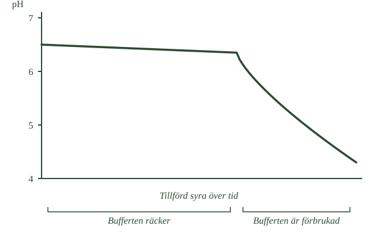
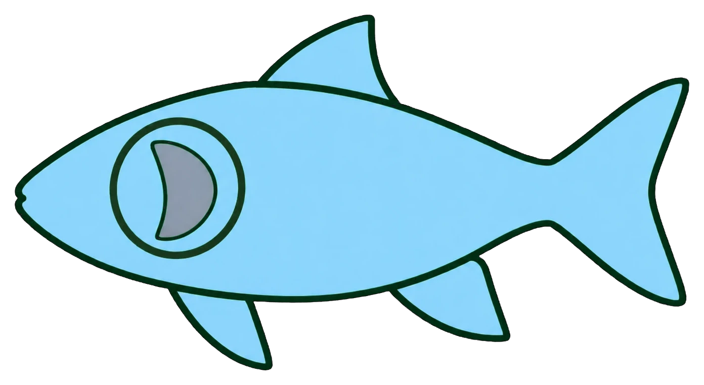
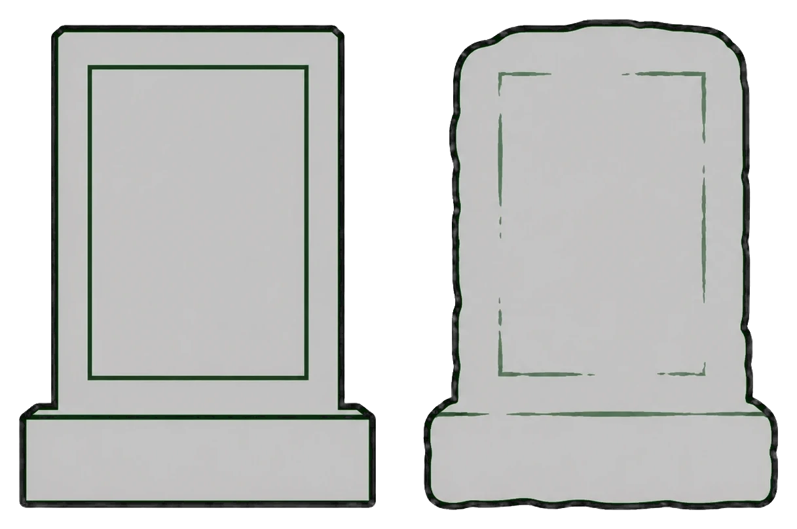

- Marken kan ta emot en viss mängd syra utan att pH ändras
- Det kallas buffertförmåga
- När bufferten tar slut sjunker pH snabbt
- Näringsämnen sköljs ur marken
- Aluminium frigörs och skadar rötter och vattendjur
Försurningen börjar i marken, och det är också där den blir svårast att göra något åt.
Marken tål en del
Mark utsätts för syror hela tiden, också helt naturligt. Ändå ändras markens pH ofta väldigt långsamt.
Anledningen är att marken har en buffertförmåga. Den innehåller ämnen som kan ta upp vätejoner och på så sätt hålla pH någorlunda stabilt — ungefär som blodets buffert du läste om tidigare.
I marken sker det dels genom att mineral långsamt vittrar sönder, dels genom reaktioner med basiska ämnen som redan finns där. Jordar med mycket kalk klarar det bäst.
Svenska marker har ofta dålig buffertförmåga. Berggrunden består till stor del av svårvittrade bergarter som ger ifrån sig lite.
Tills den inte gör det
Här kommer det som gör försurningen lömsk.
Så länge bufferten räcker händer nästan ingenting. Syra tillförs år efter år, och pH ligger stilla. Allt ser bra ut.
Men bufferten förbrukas. Och när den är slut sjunker pH snabbt — det är inte en gradvis försämring utan ett plötsligt fall.
Det är därför försurningen tog decennier att upptäcka. Skadan byggdes upp långt innan den syntes.
- Hur kurvan ser ut i början av diagrammet
- Var kurvan börjar sjunka
- Hur snabbt den faller därefter
- Vad de två klamrarna under kurvan säger

Näringen försvinner
Samtidigt händer något annat.
Marken innehåller positivt laddade näringsjoner som växterna behöver — kalcium, magnesium och kalium. De sitter bundna till markpartiklarna.
När vätejoner tillförs tränger de undan näringsjonerna, som då följer med markvattnet nedåt och försvinner. Det kallas urlakning.
Marken blir alltså fattigare på näring, samtidigt som den blir surare.
Aluminium frigörs
Och till sist något som är värre än de två föregående.
Aluminium finns naturligt bundet i markens mineral. Där är det ofarligt — det sitter fast och påverkar ingenting.
Men vid lågt pH löses aluminium ut i jonform. Och lösta aluminiumjoner är giftiga. De skadar växternas rötter, och de följer med vattnet till bäckar och sjöar där de skadar fisken.
Mer än bara pH
Slutsatsen är viktig: försurning handlar inte bara om att ett tal blir lägre.
Hela markens jonbalans förändras. Näringsämnen försvinner, och ämnen som var ofarliga blir tillgängliga och giftiga. Det är summan av detta som skadar naturen.
- Marken har en buffertförmåga genom vittring och basiska ämnen
- Kalkrika jordar buffrar bäst; svårvittrade bergarter sämst
- Vätejoner tränger undan kalcium, magnesium och kalium — urlakning
- Vid lägre pH ökar mängden lösliga aluminiumformer
- Hela markens jonbalans förändras, inte bara pH
Marken utsätts ständigt för syror, även från naturliga processer. Trots det förändras markens pH ofta långsamt. Orsaken är att marken har en buffertförmåga.
En buffert kan ta upp tillsatta vätejoner och därmed motverka stora förändringar av pH. I marken sker detta bland annat genom vittring av mineral och genom reaktioner med olika basiska ämnen. Jordar som innehåller mycket kalk har särskilt stor förmåga att neutralisera syra. Många svenska marker består däremot av svårvittrade bergarter och har därför betydligt sämre buffertförmåga.
När vätejoner tillförs marken under lång tid förbrukas en del av denna buffert. Samtidigt påverkas markens joner. Positivt laddade näringsjoner som kalciumjoner, magnesiumjoner och kaliumjoner kan trängas undan av vätejoner och följa med markvattnet nedåt. Detta kallas urlakning.
Marken förlorar då ämnen som växterna behöver.
När pH sjunker ytterligare händer något annat viktigt. Aluminium finns naturligt bundet i markens mineral. Vid högre pH är mycket av aluminiumet relativt hårt bundet, men i surare mark ökar mängden lösliga former av aluminium. Dessa kan skada växternas rötter och transporteras med markvattnet till bäckar, åar och sjöar.
Det betyder att försurning inte bara handlar om ett lägre pH-värde. Hela markens jonbalans förändras. Näringsämnen försvinner samtidigt som ämnen som aluminium blir mer tillgängliga.
Vad buffertkapacitet betyder i marken
Standardtexten säger att marken har en buffertförmåga. Begreppet mötte du i syrornas och basernas fördjupningar, men markens buffert fungerar inte riktigt som blodets.
Blodets buffert bygger på en jämvikt mellan kolsyra och vätekarbonat i lösning. Den reagerar omedelbart och fungerar åt båda hållen.
Markens buffert är något annat. Den är en förrådsbuffert: ett lager av basiska ämnen som förbrukas när de används. Vittring fyller på förrådet, men mycket långsamt.
Det gör att markens buffert har en kapacitet — en total mängd syra den kan ta emot innan den är slut. Blodets buffert har ingen sådan gräns på samma sätt, eftersom den ständigt återställs.
Därför tröskeleffekten
Nu blir kurvan begriplig.
Så länge det finns basiska ämnen kvar neutraliseras varje vätejon som tillförs, och pH ändras knappt. Marken beter sig som om ingenting händer.
Men varje vätejon som neutraliseras förbrukar lite av förrådet. När förrådet är slut finns inget kvar att neutralisera med, och nästa vätejon som tillförs sänker pH direkt.
Övergången är därför inte gradvis utan skarp. Det är samma sak som händer när en titrering passerar ekvivalenspunkten — pH står nästan stilla länge och rusar sedan.
Jonbytet
Urlakningen förtjänar en förklaring till.
Markpartiklar har negativt laddade ytor, och positiva joner fäster vid dem. Kalcium-, magnesium- och kaliumjoner sitter där och kan tas upp av växtrötter vid behov — marken fungerar som ett skafferi.
Vätejonen är liten och har hög laddningstäthet, så den binder hårdare till markpartiklarna än näringsjonerna gör. När vätejoner tillförs byter de plats med näringsjonerna, som släpps fria.
De fria näringsjonerna följer sedan med markvattnet bort, och skafferiet töms.
Om modellen: standardtexten beskriver urlakning som att jonerna trängs undan. Med laddningstätheten blir det begripligt varför just vätejonen vinner — samma egenskap som gjorde den så reaktiv i syrornas första avsnitt.
- Sjöar försuras mest genom vatten som runnit genom marken
- Både lågt pH och aluminium skadar fisken
- Aluminium fastnar på gälarna
- Vårfloden är den farligaste tiden — en surstöt
- En försurad sjö kan se klar och fin ut
Sjöarna är där försurningen syns tydligast — och där den först upptäcktes.
Vattnet kommer från marken
Det är lätt att tänka att en sjö försuras av regnet som faller rakt ner i den. Men så är det bara till en liten del.
Det mesta av vattnet i en sjö har först passerat genom marken i området runt omkring. Området som avvattnas till sjön kallas dess avrinningsområde.
Det betyder att sjöns kemi bestäms av markens. Har marken god buffertförmåga blir vattnet neutraliserat på vägen. Är bufferten förbrukad rinner surt vatten rakt ut i sjön — och med det följer aluminium.
Två saker skadar fisken
Fisken drabbas av både det låga pH:t och aluminiumet, men det senare är ofta värre.
Aluminiumjoner fastnar på fiskens gälar. Gälarna gör två saker: de tar upp syre ur vattnet, och de reglerar balansen av salter i fiskens kropp. Sätter aluminiumet igen dem störs båda.
- Var på fisken markeringen sitter
- Vilken kroppsdel det är
- Vad den delen används till

Fisken kan alltså både få syrebrist och tappa kontrollen över sin saltbalans. Lax och mört är exempel på arter som är särskilt känsliga.
Ägg och yngel är känsligast av allt.
Våren är farligast
Här kommer något som gör problemet värre än det verkar.
Under vintern lagras försurande ämnen i snön. När snön smälter på våren kommer allt på en gång — stora mängder smältvatten på kort tid, med lite som kan neutralisera det.
Då kan pH sjunka kraftigt under några dagar. Det kallas en surstöt.
Och timingen är olycklig. Våren är precis när många fiskar leker och ynglen kläcks, alltså när de är som mest känsliga.
En sjö kan se fin ut
Till sist något som är lätt att missförstå.
En försurad sjö ser ofta klar och ren ut. Vattnet är genomskinligt, ibland vackert blått.
Men klarheten är ett dåligt tecken. Den beror på att plankton och andra små organismer försvunnit — det finns helt enkelt inget kvar i vattnet som gör det grumligt.
Man kan alltså inte avgöra hur ett ekosystem mår genom att titta på hur klart vattnet är.
- Avrinningsområdet avgör hur en sjö påverkas
- Surt vatten och löst aluminium kommer via marken
- Aluminium på gälarna stör syreupptag och saltbalans
- Snösmältningen ger en surstöt när många ämnen kommer samtidigt
- Klart vatten kan vara ett tecken på förlorad mångfald
En sjö påverkas av hela området som avvattnas till sjön, det så kallade avrinningsområdet. Därför kommer en stor del av försurningspåverkan via vatten som först har passerat genom marken.
När markens buffertförmåga försämras kan surt vatten rinna vidare till bäckar, åar och sjöar. Samtidigt kan löst aluminium följa med.
Både ett lågt pH och förhöjda halter av vissa former av aluminium kan skada vattenlevande organismer. Fisk är särskilt känslig under vissa delar av livet, exempelvis när rom och yngel utvecklas.
Aluminium kan fastna på fiskarnas gälar. Där kan det störa fiskens förmåga att ta upp syre och reglera mängden salter i kroppen. Resultatet kan bli både syrebrist och störningar i fiskens saltbalans. Lax och mört är exempel på arter som är känsliga för försurning.
Även plankton, bottenlevande djur och andra arter påverkas. När känsliga arter försvinner förändras hela näringsväven. En försurad sjö kan därför se klar och ren ut samtidigt som den biologiska mångfalden har minskat kraftigt. Man kan alltså inte avgöra hur ett ekosystem mår bara genom att titta på hur klart vattnet är.
Särskilt kraftiga förändringar kan inträffa under snösmältningen på våren. Då kommer stora mängder smältvatten ut i mark och vattendrag under kort tid. Smältvattnet innehåller få neutraliserande ämnen och kan föra med sig försurande ämnen från marken och snön. Under sådana perioder kan pH tillfälligt sjunka kraftigt. Detta brukar kallas en surstöt.
Problemet blir extra allvarligt eftersom våren samtidigt är en känslig period för många vattenlevande djur.
Varför aluminium är giftigt för gälar
Standardtexten säger att aluminium stör syreupptag och saltbalans. Mekanismen är värd att titta på, eftersom den förklarar varför just gälar och varför just aluminium.
Gälarna är byggda för maximal kontakt med vattnet — tunna, veckade membran med enorm yta i förhållande till sin storlek. Det är precis vad som krävs för att ta upp syre effektivt, och precis vad som gör dem sårbara.
Aluminiumjonen har laddningen 3+, alltså ovanligt hög. Den binder därför hårt till negativt laddade ytor, och gälmembranen är negativt laddade.
Två saker händer. Aluminiumet fäller ut som en gelliknande beläggning på membranet, vilket fysiskt hindrar syret från att passera. Och det stör de jonpumpar som fisken använder för att hålla rätt salthalt — pumparna är gjorda för att hantera natrium och kalcium, inte en trevärd jon som binder hårdare än båda.
Varför pH omkring 5 är värst
Här finns något som förvånar.
Aluminium är inte mest giftigt vid lägsta möjliga pH. Det är farligast i ett mellanområde, runt pH 5 till 5,5.
Skälet är att aluminium finns i olika former beroende på pH. Vid mycket lågt pH dominerar en form som är löslig men mindre benägen att fälla ut på gälarna. I mellanområdet finns däremot former som är lösliga i vattnet men fäller ut just när de möter gälens något högre pH.
Det betyder att en sjö som håller på att försuras kan vara farligare för fisk än en som redan är kraftigt sur — och att kalkning som höjer pH för lite kan göra saken värre.
Om modellen: standardtexten beskriver aluminium som något som är giftigt i sur miljö. I verkligheten beror giftigheten på vilken form aluminiumet har, och den avgörs av pH på ett sätt som inte är rätlinjigt.
- Kalksten och marmor löses upp av sur nederbörd
- Det är samma kemi som i avkalkningsmedel, fast långsamt
- Detaljer på statyer och gravstenar suddas ut
- Metaller korroderar snabbare
- Försurningen skadar alltså också kulturföremål
Försurningen skadar inte bara det som lever. Den angriper också material.
Kalksten löses upp
Kalksten och marmor består till stor del av kalciumkarbonat — samma ämne som kalkavlagringarna i en vattenkokare.
Och du vet redan vad som händer när kalk möter syra: den löses upp. Det är därför avkalkningsmedel innehåller citronsyra.
Sur nederbörd gör exakt samma sak med stenen, fast mycket långsammare. Varje regn löser bort en försvinnande liten mängd.
År efter år
Men det sker om och om igen, i decennier och sekler.
Till slut syns det. Skarpa kanter blir rundade, ristade bokstäver blir otydliga, ansikten på statyer suddas ut. Gravstenar från 1800-talet kan vara oläsliga medan stenar från samma tid i torrare klimat är som nya.
Det är samma reaktion som i din vattenkokare. Skillnaden är bara hastigheten.
- Jämför kanterna på de två stenarna
- Jämför hörnen
- Vad som hänt med inramningen på den högra
- Vilken som stått ute längst

Metaller också
Sur miljö påskyndar dessutom korrosion — det vi till vardags kallar rost när det gäller järn.
Broar, ledningar, järnvägar och kulturföremål av metall får kortare livslängd i sur miljö.
Därför räknas det med
Det här är skälet till att Sveriges miljömål om försurning inte bara handlar om naturen.
Målet omfattar också skador på tekniska material och kulturföremål — byggnader, broar och föremål som är omöjliga att ersätta.
- Kalciumkarbonat reagerar med vätejoner
- \(\ce{CaCO3 + 2 H+ -> Ca^2+ + CO2 + H2O}\)
- Reaktionen är långsam men ger synlig skada efter år
- Sur miljö påskyndar korrosion av metaller
- Sveriges miljömål omfattar även tekniska material och kulturföremål
Försurningen påverkar inte bara levande organismer. Syror reagerar också med olika material.
Kalksten och marmor består till stor del av kalciumkarbonat, \(\ce{CaCO3}\). Kalciumkarbonat reagerar med vätejoner:
När kalksten utsätts för sur nederbörd löses därför små mängder av stenen upp. Reaktionen går långsamt, men efter många år kan detaljer på statyer, byggnader, gravstenar och andra kulturföremål skadas.
Samma grundläggande kemi används när man tar bort kalkavlagringar hemma med en syra. Skillnaden är framför allt hastigheten.
Även metaller påverkas. En sur miljö kan påskynda korrosion av vissa metaller. Broar, ledningar, järnvägsanläggningar och kulturföremål kan därför få kortare livslängd. Sveriges miljömål om försurning omfattar därför inte bara naturen utan även skador på tekniska material och kulturföremål.
Varför reaktionen går åt det hållet
Standardtexten ger formeln men inte förklaringen till varför den går.
Kalciumkarbonat är svårlösligt, som du vet från repetitionens sista avsnitt. Ett litet antal joner löser sig ändå, och mellan det fasta ämnet och lösningen råder en jämvikt.
Karbonatjonen är en bas — den kan ta upp protoner. Möter den en vätejon gör den det, och blir vätekarbonat och sedan kolsyra.
Kolsyran är instabil och sönderfaller till vatten och koldioxid, som bubblar bort.
Och där ligger poängen: karbonatjonen försvinner ur systemet. Jämvikten kan då inte återställas — mer kalksten måste lösa sig för att ersätta det som försvunnit, och den processen fortsätter så länge det finns syra.
Det är därför en svårlöslig sten ändå vittrar bort. Syran tar bort produkten, och jämvikten följer efter.
Gipskrustan
En detalj som förklarar hur skadan faktiskt ser ut på gamla byggnader.
När svavelsyra reagerar med kalciumkarbonat bildas inte bara lösliga produkter. Det bildas också kalciumsulfat, alltså gips.
Gips är mer lösligt än kalksten men inte helt lösligt, och det har större volym. På ytor som skyddas från direkt regn bygger det upp en svart skorpa — svart för att sot och partiklar bakas in i den.
Skorpan spränger sakta sönder stenen inifrån, och när den till slut lossnar följer ett lager av den ursprungliga stenen med.
Det är därför skador på gamla byggnader ofta är värst på ytor under utsprång, där regnet inte sköljer bort gipset — tvärtemot vad man skulle gissa.
Om modellen: standardtexten beskriver upplösning. I verkligheten sker både upplösning och ombildning till ett annat ämne, och det är ombildningen som gör mest skada.
Laddar övningskort…
Laddar frågor ...